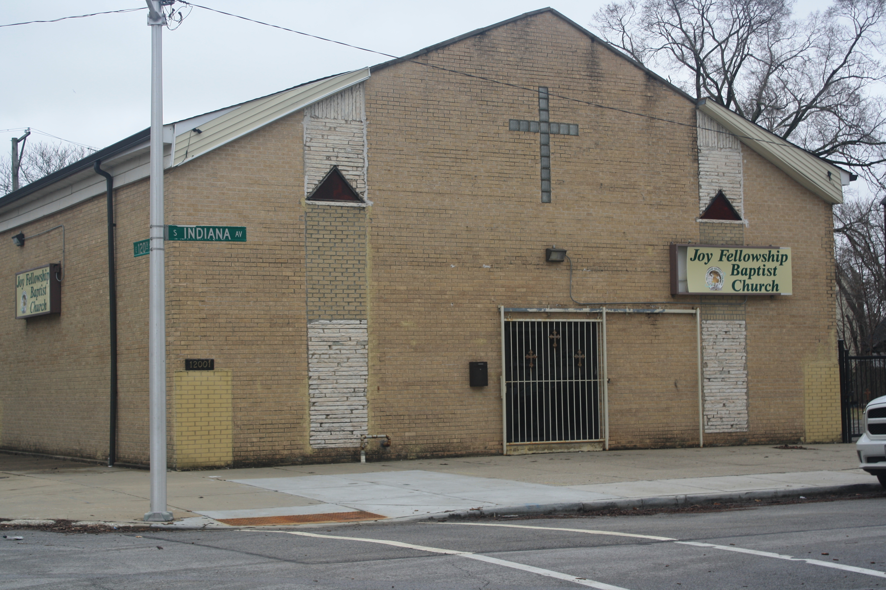
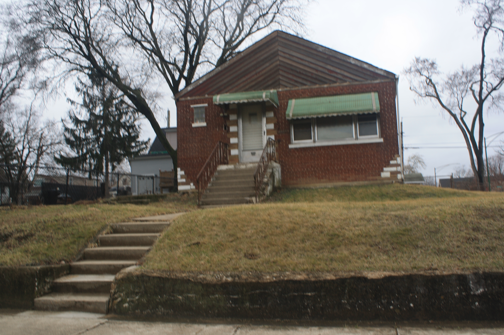

Chicago Built Environment
This page features my photography and observations of Chicago's built environment, including architecture, public spaces, and neighborhoods.
I've been volunteering with Nourishing Hope for over a year. Since November, I've been delivering meals on Chicago's South and West Side neighborhoods and was amazed by how diverse this city is and how the same street and address on the North Side can have a very different twin on the South Side. I became interested in the urban landscapes and how they reflect the history of changing industries and urban planning that was supposed to make connections, but for people living in Chicago's South and West neighborhoods, these projects often literally divided neighbors and made Chicago more segregated.
By visiting these neighborhoods, I saw how beautiful the houses had been and how grand the streets used to be. I could see how the decline of certain industries closed down train lines and made some neighborhoods less populated and less desirable. I learned about redlining and how inequality transformed neighborhoods from vibrant centers to empty lots. I also saw how urban planning to serve certain industries, like in the Pullman District, created different kinds of urban landscapes. This page explores Chicago history through photographs of the built environment to show how infrastructure projects like the Dan Ryan, and housing policies like redlining, shaped Chicago's neighborhoods in different ways.
Neighborhood Photo Essay
Below are photographs from different Chicago neighborhoods. Each group of photos shows parts of the built environment, including houses, streets, public spaces, and buildings. After each set of photos, I reflect on what I noticed about the neighborhood and how its history may still be visible in the landscape today.
Bronzeville

Photo 1: Exterior view of the Hammer-Palmer Mansion showing its scale and detail.

Photo 2: Architectural details that show the craftsmanship of the building.

Photo 3: View of how the mansion fits into the surrounding neighborhood.

Photo 4: Another angle showing the size and presence of the building.

Photo 5: Vacant firehouse showing how some buildings have been left unused over time.

Photo 6: Elevated train tracks showing how transportation infrastructure cuts through the neighborhood.
In Bronzeville, I noticed how much history is still visible in the buildings. Some of the homes and structures look like they were once really important and well taken care of, even if they are not all maintained the same way today. It made me think about how this neighborhood used to be a major cultural center, but over time lost investment. You can still see how strong the neighborhood's foundation is just by looking at the architecture. It feels like a place that has gone through a lot of change but still holds onto its identity.
Stockyards

Photo 1: Train line showing how transportation supported the Stockyards and industrial activity.
The Stockyards area felt very different from the other neighborhoods because everything seemed built around industry. The layout of the streets and buildings made it clear that this area was designed for work, transportation, and production. Even though the original meatpacking industry is mostly gone, you can still see how it shaped the land and infrastructure. It made me realize how much Chicago's growth depended on these industries and how neighborhoods were created to support them.
Englewood

Photo 1: Francis Parkman School showing how public buildings reflect neighborhood history.

Photo 2: An isolated building surrounded by empty lots, showing the effects of disinvestment.

Photo 3: Another building standing alone where there used to be more development.

Photo 4: A third example of isolation in the built environment.

Photo 5: Abandoned church in Englewood.

Photo 6: Empty sidewalks reflecting reduced activity.

Photo 7: Another sidewalk view showing limited activity and space.

Photo 8: A final view of the streetscape showing gaps in the built environment.
Englewood was one of the places where I could most clearly see the effects of disinvestment. Many buildings are still standing, but they are often isolated, surrounded by empty lots where other structures used to be. Walking through these areas made it clear how much has changed over time.
The Dan Ryan physically divided parts of the neighborhood and reflects planning decisions that did not benefit the people living there. The sidewalks and open spaces often felt emptier than in other parts of the city, which shows how population loss and economic changes are visible in the built environment.
At the same time, this is still a lived-in community. People are still there, and the neighborhood continues to function despite these challenges.
Pullman

Photo 1: Mansion in Pullman showing the scale and planning of the neighborhood.

Photo 2: Rowhouses that show how uniform and planned the neighborhood is.

Photo 3: District sign marking Pullman as a historic and planned community.
Pullman is a planned neighborhood. The houses and streets are organized in a way that shows it was built as a company town. Everything seems intentional, which reflects how the Pullman Company designed the area for workers. At the same time, the neighborhood is really beautiful, and the buildings have been preserved well. It made me think about how industry didn't just shape jobs, but also shaped where and how people lived.
Roseland

Photo 1: Joy Fellowship Baptist Church showing how community spaces remain important in the neighborhood.

Photo 2: Residential home showing the distinctive landscape in this area, which is hilly.

Photo 3: Another view of housing that reflects the neighborhood's character and history.
In Roseland, you can see how larger systems like housing policy and economic shifts have shaped what the neighborhood looks like today.
Conclusion
Working on this project made me pay more attention to how much history is visible in the built environment. Across Bronzeville, the Stockyards, Englewood, Pullman, and Roseland, I noticed that buildings, streets, train lines, and public spaces all reflect larger stories about industry, segregation, investment, and change. Some places showed clear signs of preservation and pride, while others showed the effects of disinvestment and loss.
Looking at these neighborhoods through photography helped me better understand how planning decisions and housing policies shaped Chicago in unequal ways. At the same time, these neighborhoods also show resilience, identity, and community, which are just as important to the story of the city.